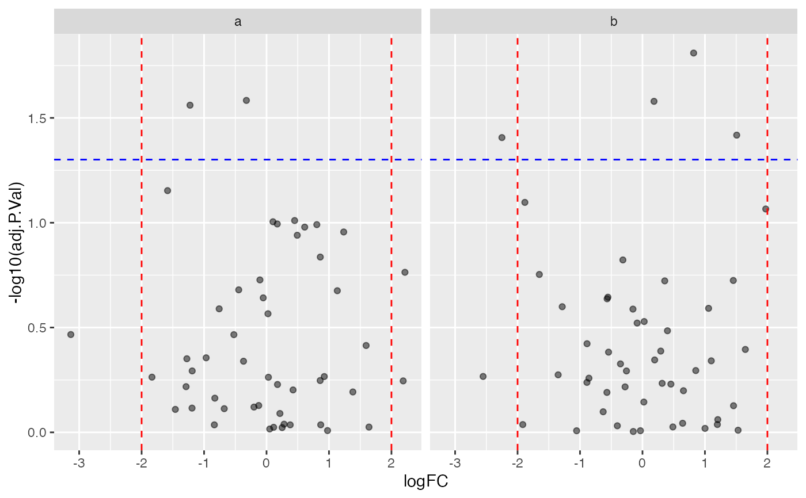

plot volcano given multiple contrasts
multigroup_volcano(
.data,
effect = "fc",
significance = "p.adjust",
contrast = "condition",
colour = "colour",
xintercept = c(-2, 2),
yintercept = 0.05,
label = NULL,
size = 1,
segment.size = 0.3,
segment.alpha = 0.3,
scales = "fixed",
maxNrOfSignificantText = 20
)column containing effect sizes
column with contrast
colouring of points
fc thresholds
column containing labels
controls size of text
controls size of lines
controls visibility of lines
parameter to ggplot2::facet_wrap
data in long format
column containing p-values, q.values etc
sigthreshold threshold
adds ablines horizontal and vertical
Other utilities:
INTERNAL_FUNCTIONS_BY_FAMILY,
get_UniprotID_from_fasta_header(),
matrix_to_tibble(),
names_to_matrix(),
pairs_smooth(),
pairs_w_abline(),
panel_cor(),
panel_hist(),
remove_NA_rows(),
table_facade()
show <- prolfqua_data('data_multigroupFC') |>
dplyr::filter(Condition %in% c("TTB7_38h_test - TTB7_16h_test","TTB7_96h_test - TTB7_96h_sys") )
prolfqua::multigroup_volcano( show,
effect="logFC",
significance = "adj.P.Val",
contrast="Condition",
colour=NULL,
label="Name",
maxNrOfSignificantText = 300)
